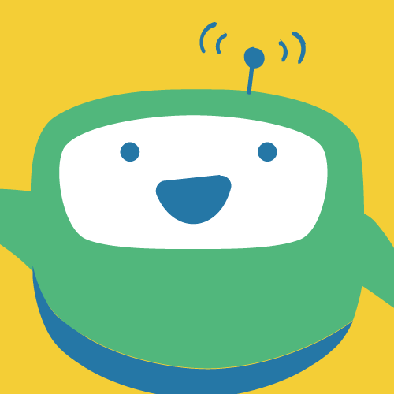

Female only. Kind and friendly. No need to be chatty or an outsider, just fellow the rule.
Female only. Kind and friendly. You don’t have to be very talkative, just fellow the rules. My contact is here: Phone:09******** Email:*******@gmail.com
主旨：Looking for an foreign apartment roommate
I’m a Taiwanese college student, I’m looking for an international apartment roommate. The apartment is near Guting MRT Station exit two, five min walking, it’s very conveniet! Two living rooms, two bedrooms and one bathroom.
The monthly rent is NT$12,000, and we split utilities like electricity. Water is included. No pets, please, and let’s keep quiet after 10 p.m. every day. I hope we can keep the common areas clean and take turns doing simple choers like washing dishes, sweeping the floor, taking out the trash. We need to taking out the trash twice a week, Monday and Tuesday.
Female only. Kind and friendly, you don’t have to be very talktive, just follow the rules. please feel free to contact me: Phone:09******** Email:*******@gmail.com
